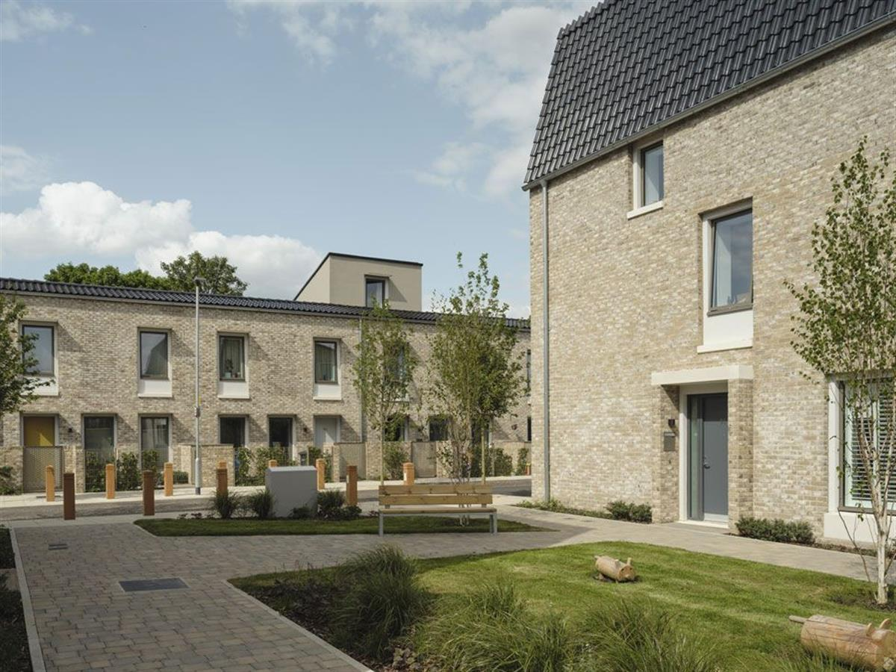
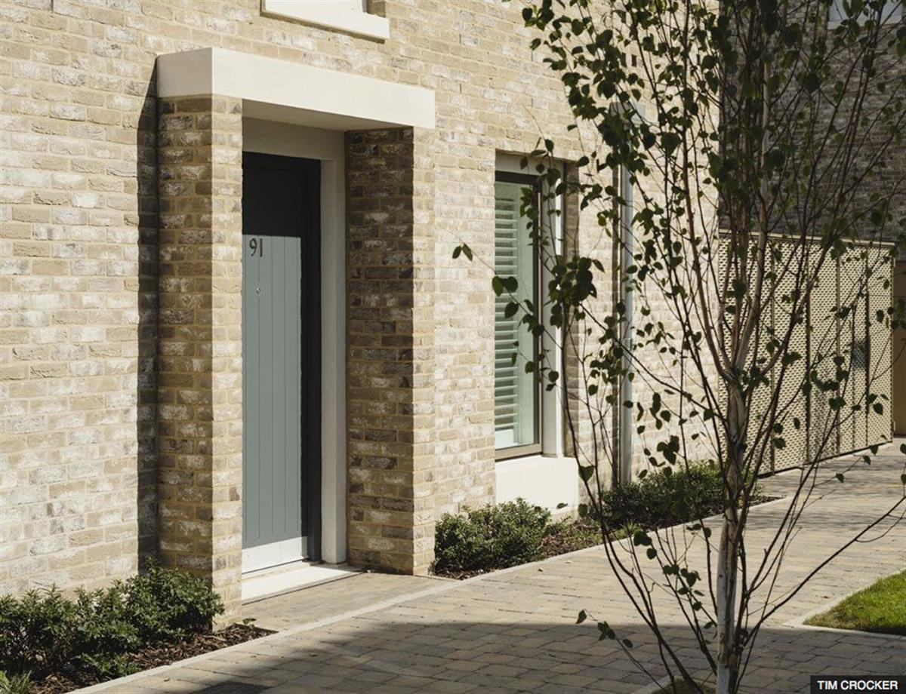
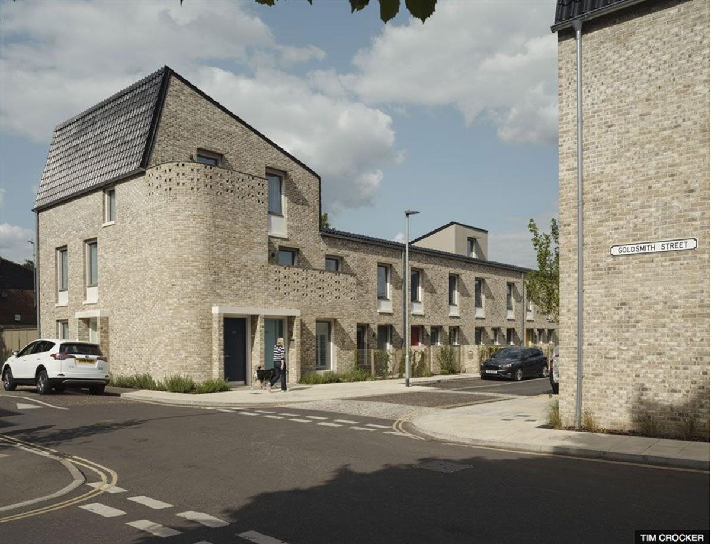
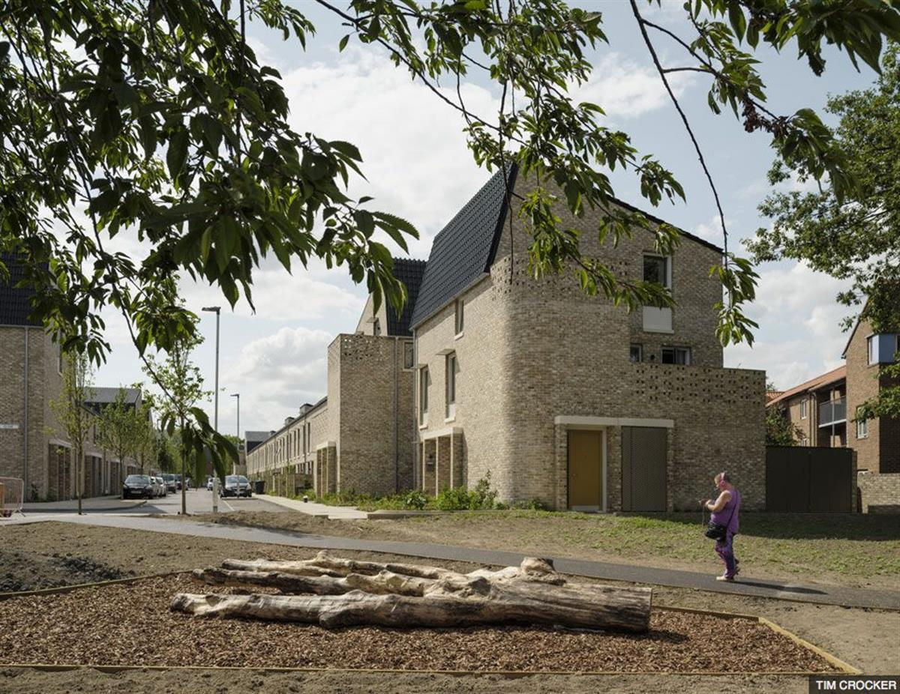

8TH october 2019
An eco-friendly council estate in Norwich has scooped this year's prestigious Riba Stirling Prize for architecture.
The Royal Institute of British Architects gives out the award each year to the UK's best new building.
The estate, called Goldsmith Street, is made up of almost 100 ultra low-energy homes for Norwich City Council.
It beat the likes of London Bridge Station and the Nevill Holt Opera, Market Harborough, to the prize.

Image copyright Tim CrockerGoldsmith Street meets rigorous 'Passivhaus' environmental standards, which means it 'provides a high level of occupant comfort while using very little energy for heating and cooling', according to the Passivhaus Trust.
Riba said the estate's environmental credentials made it a 'beacon of hope' and highly unusual for a mass housing development.
'Faced with a global climate emergency, the worst housing crisis for generations and crippling local authority cuts, Goldsmith Street is a beacon of hope,' said Riba president Alan Jones.
'It is commended not just as a transformative social housing scheme and eco-development, but a pioneering exemplar for other local authorities to follow.'

Image copyright Tim CrockerGoldsmith Street is made up of two-storey houses, bookended by three-storey flats.
The estate has been designed by architect company Mikhail Riches to be eco-friendly down to the smallest of detail.
Letterboxes are built into external porches, rather than the front doors, to reduce draughts.
Homes run on a passive solar scheme, estimated to bring residents annual energy bills which are 70% cheaper than those for the average household.

Image copyright Tim CrockerAll face south to get as much sunlight as possible; walls are more than 60cm thick and the roofs are tilted in such a way to avoid blocking sunlight from the neighbours.
As for the aesthetic, they are made in materials referencing Norwich's history, such as glossy black roof pantiles, which are a nod to the city's Dutch trading links, and creamy clay bricks similar to Victorian terraces nearby.
To give residents a sense of individuality and ownership, touches have been included such coloured front doors, generous lobby space for prams and bikes and private balconies.

Image copyright Tim CrockerAnd to encourage a community spirit, the back gardens of the central terraces share a secure play area for children and a landscaped walkway for communal gatherings runs through the middle of the estate.
'It is not often we are appointed to work on a project so closely aligned with what we believe matters; buildings people love which are low impact,' said David Mikhail of Mikhail Riches.
'We hope other local authorities will be inspired to deliver beautiful homes for people who need them the most, and at an affordable price.
'To all the residents - thank you for sharing your enthusiasm, and your homes, with everyone who has visited.'
Last year's winning building was the European headquarters of Bloomberg, the world's most sustainable office and largest stone building in the City of London.
SOURCE: BBC